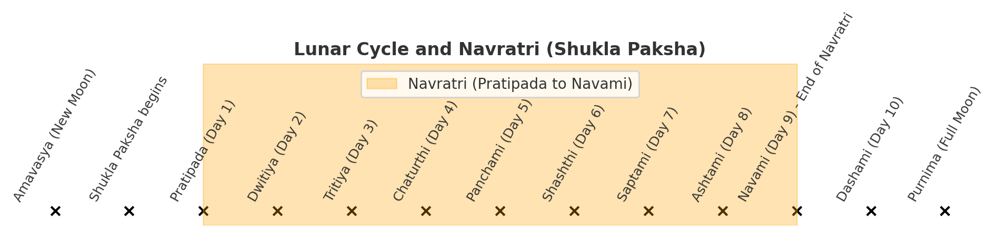
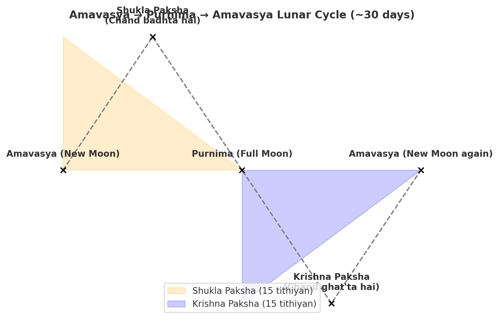

Navratri - Significance & Mythology
📖
Note: This article is intended for reflection and sharing knowledge. It is not written for
debate, but for thoughtful exchange of perspectives.
What is Navratri
- It is a festival dedicated to the Divine Feminine, especially Goddess Durga (and her various forms).
- Celebrated over nine nights and ten days.
- There are four Navratri periods in a year, but the two most significant are:
- Chaitra Navratri in spring (around March–April)
- Sharad Navratri in autumn (around September–October)
Significance
- It commemorates the battle between Goddess Durga and the demon Mahishasura, symbolizing good’s
triumph over evil.
- Each of the nine days is dedicated to a different form (avatar) of the Goddess, often called the
Navadurga.
Rituals & Traditions
- Fasting is common. Many devotees observe fasts or eat only certain foods during these days.
- Puja / worship of the different forms of Durga, singing devotional songs (bhajans), reciting
mantras.
- Kanya Puja or Kanjak on the 8th or 9th day: worship of young girls as embodiments of the goddess.
- In different parts of India there are regional variations — dances (e.g. Garba / Dandiya in
Gujarat), processions, special decorations, etc.
Relation with Moon
- Each Navratri begins on the Pratipada tithi (the first day of the waxing phase of the moon).
- It continues until the Navami tithi (9 days).
- In essence: each Navratri starts after Amavasya (new moon), when the moon begins to wax.


Reasons Behind This Festival
Navratri has religious, natural, and social reasons behind its celebration:
1. Religious / Spiritual Reasons
- It is a time to worship the 9 forms of the Goddess (Navadurga).
- Sharad Navratri – Celebrates Goddess Durga's victory over the demon Mahishasura, symbolizing the
triumph of good over evil.
- Chaitra Navratri – Ends on Ram Navami, marking the birth of Lord Rama.
- Gupt Navratri (Magh, Ashadh) – A time for secret spiritual practices by seekers and tantriks.
2. Natural / Seasonal Reasons
- Both major Navratris (Chaitra and Sharad) occur during seasonal transitions:
- Chaitra Navratri – Before the onset of summer (March–April).
- Sharad Navratri – Before the onset of winter (September–October).
- During seasonal changes, the body becomes weak, so fasting, eating sattvic food, and detox practices
were introduced.
3. Social / Cultural Reasons
- Community activities like jagran, garba, dandiya, Ramleela, and Durga Puja bring people together.
- It honors feminine power (kanya puja = worship of young girls as forms of the Goddess).
- Each region has its own cultural flavor: Durga Puja in Bengal, Garba in Gujarat, Ramleela in North
India.
Navratri in Vedas and Puranas
1. Vedas
- Rigveda and Atharvaveda mention the power and praise of the Goddess (Devi Sukt, Ambhrani Sukta).
- However, the festival "Navratri" is not directly mentioned in the Vedas.
- The Vedas primarily emphasize goddess worship as the adoration of nature and natural forces.
- Practices like fasting, idol installation, Durga Saptashati recitation, Kalash Sthapana, Garba,
Raslila, etc., originated later from Puranic and Tantra traditions (mostly from the 1st millennium
CE onwards).
2. Puranas
Navratri is primarily described in Devi-related Puranas:
- Markandeya Purana (Devi Mahatmya / Durga Saptashati): Contains details of Goddess
Durga's battle with Mahishasura, forming the spiritual basis of Sharad Navratri.
- Devi Bhagavata Purana: Explains the significance of Navratri fasting, worship
rituals, and the forms of the Goddess.
- Skanda Purana & Kalika Purana: Mention the dates and rituals for worshiping the
Goddess, as well as the connection between Durga Puja and Sharad Navratri.
3. Itihasa (Mahabharata, Ramayana)
- Mahabharata: The Pandavas worshipped Goddess Durga during Navratri before the
Kurukshetra war.
- Ramayana: Lord Rama worshipped Goddess Durga before the battle with Ravana in Lanka
(this is why it is called "Akal Bodhan" in Bengal).
Rigveda and Atharvaveda References
Rigveda – Devi Sukt / Ambhrani Sukta
- Source: Rigveda Mandala 10, Sukta 125
- Rishi: Vak Ambhrini (a female sage, hence it is also called Ambhrani Sukta).
- In this Sukta, the Goddess describes herself as the primordial universal power:
- “Aham rudrebhir vasubhiś carāmy aham ādityair uta viśvadevaiḥ…” -> Meaning: “I move with the
Rudras, Vasus, Adityas, and all the gods.”
- I, the Goddess, empower all the deities.
- I pervade the universe — Earth (Prithvi), Sky (Antariksha), and Heaven (Dyau) are all sustained
by me.
- I nourish all beings like a mother who gives birth.
- I am the creator of the universe, the giver of strength to all gods and humans.
- I am the essence of speech (Vak), knowledge, and consciousness that pervades everything.
- This is one of the oldest hymns that portrays the Goddess as the all-pervading power.
More details: Click here
Atharvaveda – Devi / Shakti Hymns
- The Atharvaveda contains various hymns praising the Goddess as the power of nature.
- Examples:
- Atharvaveda 7.38: A hymn dedicated to Prithivi (Mother Earth).
- Atharvaveda 12.1 (Prithivi Sukta): “Bhumir bhūmānaṃ bhūtanī…” – This entire
Sukta is dedicated to Mother Earth.
- Here, the Goddess is worshipped as Vishvamata (Universal Mother), Dharini (the Sustainer), and
Jeevan-shakti (Life Force).
❖ ❖ ❖
📖
Footnote: This article is intended to provide food for thought and reflection. It is not
meant for debate, but rather for the exchange of knowledge and perspectives.
नवरात्रि - महत्व और पौराणिक कथाएँ
📖
नोट: यह लेख विचार और चिंतन के लिए है। यह बहस के लिए नहीं, बल्कि ज्ञान और दृष्टिकोण के
आदान-प्रदान के लिए है।
नवरात्रि क्या है
- यह एक त्योहार है जो देवी शक्ति, विशेष रूप से देवी दुर्गा (और उनके विभिन्न रूपों) को समर्पित है।
- यह नौ रातों और दस दिनों तक मनाया जाता है।
- साल में चार नवरात्रि होती हैं, लेकिन दो सबसे महत्वपूर्ण हैं:
- चैत्र नवरात्रि (वसंत ऋतु में, लगभग मार्च–अप्रैल)
- शारदीय नवरात्रि (शरद ऋतु में, लगभग सितंबर–अक्टूबर)
महत्व
- यह देवी दुर्गा और राक्षस महिषासुर के बीच हुए युद्ध को याद करता है, जो बुराई पर अच्छाई की जीत का
प्रतीक है।
- नौ दिनों में से प्रत्येक दिन देवी के एक अलग रूप (अवतार) को समर्पित है, जिन्हें नवदुर्गा कहा जाता है।
अनुष्ठान और परंपराएँ
- उपवास रखना आम है। कई भक्त इन दिनों उपवास रखते हैं या केवल विशेष प्रकार का भोजन करते हैं।
- देवी दुर्गा के विभिन्न रूपों की पूजा, भजन गाना, मंत्रों का जाप करना।
- अष्टमी या नवमी के दिन कन्या पूजन या कंजक: छोटी लड़कियों की पूजा देवी के रूप में की जाती है।
- भारत के विभिन्न हिस्सों में क्षेत्रीय विविधताएँ हैं — जैसे गुजरात में गरबा/डांडिया, जुलूस, विशेष
सजावट आदि।
चंद्रमा के साथ संबंध
- प्रत्येक नवरात्रि प्रतिपदा तिथि (शुक्ल पक्ष का पहला दिन) से शुरू होती है।
- यह नवमी तिथि (9 दिन) तक चलती है।
- अर्थात: प्रत्येक नवरात्रि अमावस्या के बाद शुरू होती है, जब चंद्रमा बढ़ने लगता है।
इस त्योहार के पीछे के कारण
नवरात्रि के धार्मिक, प्राकृतिक और सामाजिक कारण हैं:
1. धार्मिक / आध्यात्मिक कारण
- यह देवी के 9 रूपों (नवदुर्गा) की पूजा का समय है।
- शारदीय नवरात्रि – देवी दुर्गा की महिषासुर पर विजय का उत्सव, जो बुराई पर अच्छाई की जीत का प्रतीक है।
- चैत्र नवरात्रि – राम नवमी पर समाप्त होती है, जो भगवान राम के जन्म का प्रतीक है।
- गुप्त नवरात्रि (माघ, आषाढ़) – साधकों और तांत्रिकों के लिए गुप्त साधना का समय।
2. प्राकृतिक / मौसमी कारण
- दोनों प्रमुख नवरात्रि (चैत्र और शारदीय) हमेशा मौसम परिवर्तन के समय आते हैं:
- चैत्र नवरात्रि – गर्मियों के आने से पहले (मार्च–अप्रैल)।
- शारदीय नवरात्रि – सर्दियों के आने से पहले (सितंबर–अक्टूबर)।
- मौसम परिवर्तन के दौरान शरीर कमजोर हो जाता है, इसलिए उपवास, सात्विक भोजन और डिटॉक्स की परंपरा बनाई
गई।
3. सामाजिक / सांस्कृतिक कारण
- जागरण, गरबा, डांडिया, रामलीला, दुर्गा पूजा जैसे सामुदायिक आयोजन लोगों को एकजुट करते हैं।
- यह नारी शक्ति का सम्मान करता है (कन्या पूजन = देवी रूप की पूजा)।
- हर क्षेत्र में अपनी सांस्कृतिक छटा है: बंगाल में दुर्गा पूजा, गुजरात में गरबा, उत्तर भारत में
रामलीला।
नवरात्रि वेदों और पुराणों में
1. वेद
- ऋग्वेद और अथर्ववेद में देवी की शक्ति और स्तुति (देवी सूक्त, अंबृणी सूक्त) का उल्लेख है।
- हालांकि, "नवरात्रि" नामक त्योहार का वेदों में सीधे उल्लेख नहीं है।
- वेद मुख्य रूप से देवी-उपासना और प्रकृति की शक्तियों की आराधना पर जोर देते हैं।
- उपवास, मूर्ति स्थापना, दुर्गा सप्तशती पाठ, कलश स्थापना, गरबा, रासलीला आदि परंपराएँ बाद में पुराणों
और तंत्र परंपराओं (मुख्यतः 1 सहस्राब्दी ईस्वी के बाद) से आईं।
2. पुराण
नवरात्रि का वर्णन मुख्य रूप से देवी-संबंधित पुराणों में मिलता है:
- मार्कंडेय पुराण (देवी महात्म्य / दुर्गा सप्तशती): इसमें देवी दुर्गा और महिषासुर के
युद्ध का विवरण है, जो शारदीय नवरात्रि का आध्यात्मिक मूल है।
- देवी भागवत पुराण: इसमें नवरात्रि व्रत, पूजा विधि और देवी के रूपों का महत्व समझाया
गया है।
- स्कंद पुराण और कालिका पुराण: इनमें देवी की पूजा की तिथियों और विधियों का उल्लेख है,
साथ ही दुर्गा पूजा और शारदीय नवरात्रि का संबंध बताया गया है।
3. इतिहास (महाभारत, रामायण)
- महाभारत: पांडवों ने कुरुक्षेत्र युद्ध से पहले नवरात्रि में देवी दुर्गा की पूजा की
थी।
- रामायण: भगवान राम ने लंका युद्ध से पहले देवी दुर्गा की पूजा की (इसे बंगाल में "अकाल
बोधन" भी कहते हैं)।
ऋग्वेद और अथर्ववेद संदर्भ
ऋग्वेद – देवी सूक्त / अंबृणी सूक्त
- स्रोत: ऋग्वेद मंडल 10, सूक्त 125
- ऋषि: वाक् अंबृणी (एक महिला ऋषि, इसलिए इसे अंबृणी सूक्त भी कहते हैं)।
- इस सूक्त में देवी ने स्वयं को विश्व की आद्य शक्ति के रूप में वर्णित किया है:
- “अहं रुद्रेभिर्वसुभिश्चराम्यहमादित्यैरुत विश्वदेवैः…” -> अर्थ: “मैं रुद्रों, वसुओं, आदित्यों और
सभी देवताओं के साथ विचरण करती हूँ।”
- मैं, देवी, सभी देवताओं को शक्ति प्रदान करती हूँ।
- मैं ब्रह्मांड में व्याप्त हूँ — पृथ्वी (पृथ्वी), अंतरिक्ष (आकाश), और स्वर्ग (द्यौ) सभी मेरे
द्वारा स्थिर हैं।
- मैं सभी प्राणियों को एक माँ की तरह पोषण करती हूँ।
- मैं ब्रह्मांड की सृष्टिकर्ता हूँ, सभी देवताओं और मनुष्यों को शक्ति प्रदान करती हूँ।
- मैं वाक् (वाणी, ज्ञान, चेतना) के रूप में सब जगह व्याप्त हूँ।
- यह सबसे प्राचीन स्तुति है जो देवी को सर्वव्यापी शक्ति के रूप में दर्शाती है।
अधिक जानकारी: यहाँ क्लिक करें
अथर्ववेद – देवी / शक्ति स्तुतियाँ
- अथर्ववेद में विभिन्न देवी की स्तुतियाँ हैं जो प्रकृति की शक्ति के रूप में उनकी प्रशंसा करती हैं।
- उदाहरण:
- अथर्ववेद 7.38: पृथ्वी (माँ धरती) की स्तुति।
- अथर्ववेद 12.1 (पृथ्वी सूक्त): “भूमिर् भूमाणं भूतानि…” – यह पूरा सूक्त माँ
पृथ्वी को समर्पित है।
- यहाँ देवी को विश्वमाता, धरणी और जीवन-शक्ति के रूप में पूजा गया है।
❖ ❖ ❖
📖
टिप्पणी: यह लेख विचार और चिंतन के लिए प्रेरित करने के उद्देश्य से लिखा गया है। इसका
उद्देश्य बहस करना नहीं है, बल्कि ज्ञान और दृष्टिकोणों के आदान-प्रदान को बढ़ावा देना है।